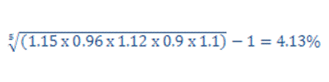
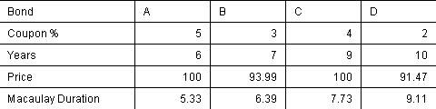
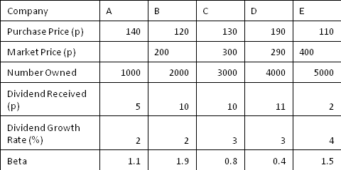
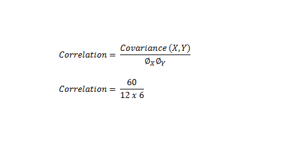
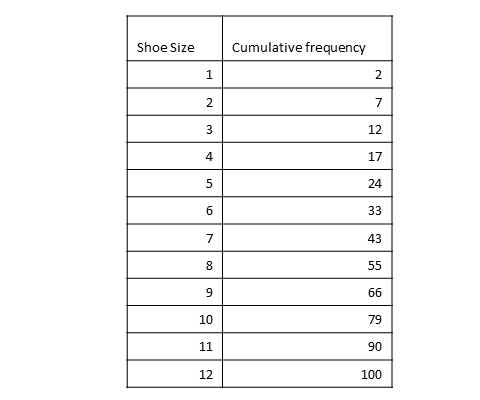

Practice Mock Exam
Question 1
[1067814]
Calculate the geometric mean of the set of annualised returns given:
Year 1 = 15%
Year 2 = -4%
Year 3 = 12%
Year 4 = -10%
Year 5 = 10%
Give your answer as a percentage in the form 0.00
The correct answer is: 4.13 - 4.13
Explanation
Answer = 4.13%
Question 2
[1001108]
A company aims to reduce its free float without cancelling any of its shares. All other things being equal, what would the effect of this be on the company's market capitalisation?
A
The market capitalisation would not be affected
B
The market capitalisation would increase
C
The market capitalisation would decrease
D
The market capitalisation would be reassessed by the LSE
The correct answer is: A - The market capitalisation would not be affected
Explanation
The market capitalisation equals the number of shares in issue multiplied by the market price of the share. How many of those shares are in the hands of the public is irrelevant to the calculation.Question 3
[1001115]
The market price of a share is £1.50. A 1:4 rights issue at £1 per share is announced. The theoretical nil paid price of the rights is:
A
40p
B
50p
C
£1
D
£1.50
The correct answer is: A - 40p
Explanation
Step 1) Calculate the theoretical ex-rights price: Before: 4 shares @ £1.50 = £6 During: 1 share @ £1 = £1 After: 5 shares £7 Ex-rights price = £7 / 5 shares = £1.40 Step 2) Calculate theoretical nil paid price: Theoretical nil paid price = ex-rights price - subscription price = £1.40 - £1 = 40p.Question 4
[1001116]
There is a 1:2 bonus issue. What was the cum-bonus price if the ex-bonus price is £5 per share?
A
£2.00
B
£4.50
C
£5.50
D
£7.50
The correct answer is: D - £7.50
Explanation
After the bonus the shareholder has three shares worth £5 each = £15. Prior to the bonus this same total value was spread over two shares. Therefore: £15 / 2 = £7.50.Question 5
[1001294]
If a 10% debenture stock has a price of £100 and a 15% debenture has a price of £150, which of the following is false assuming they both have the same maturity?
A
The flat-yield for both is identical
B
All other timings being equal, the 10% debenture is more sensitive to interest rate changes
C
The gross redemption yield for both is identical
D
The 10% debenture is more attractive to non-taxpayers
The correct answer is: C - The gross redemption yield for both is identical
Explanation
The GRY is less for the 15% than the 10% bond. This is because the 15% bond is trading above par value and, therefore, at redemption will result in a capital LOSS, thus reducing the GRY compared to the 10% bond which is trading at par. Consequently, the 10% bond will be more attractive to non-taxpayers as it has a greater GRY. Note: in the US, the GRY is referred to as the YTM - yield-to-maturity.Question 6
[1001301]
The clean price of a gilt means:
A
Trading at or below par
B
The current yield is 10% of the redemption yield
C
Excluding commissions
D
Excluding accrued interest
The correct answer is: D - Excluding accrued interest
Explanation
Quoted gilt prices are 'clean' prices. The 'clean' price does not include accrued interest - the 'dirty' price does include accrued interest and is the actual price paid in the market.Question 7
[1001306]
A bond which has just defaulted on a coupon payment would be rated as by Standard and Poor's as:
A
BBB
B
BB
C
C
D
D
The correct answer is: D - D
Explanation
D (for default) is S&P's lowest rating.Question 8
[1001344]
Which of the following is FALSE in respect of UK government Treasury bills?
A
They are a form of long-term borrowing
B
The DMO issues
C
They are issued at a discount to par
D
They carry no rate of interest
The correct answer is: A - They are a form of long-term borrowing
Explanation
The DMO issues T-bills via a weekly COMPETITIVE tender. As bills do NOT pay a coupon, they are always issued and traded at a discount to par, hence the term 'discounted instruments'. T-bills are usually issued with a three- or six month-life. However, the most common is the three-month bill.Question 9
[1001372]
Which would you NOT find as a current liability in a balance sheet?
A
Trade creditors
B
Interest paid
C
Dividends not paid
D
Overdraft
The correct answer is: B - Interest paid
Explanation
A current liability is an obligation payable within one year of the balance sheet date. Interest paid would appear in the cash flow statement.Question 10
[1001387]
A company's profit after tax is £2m. If interest is £200,000, tax paid is £600,000, and capital employed is £20m, what is the return on capital employed?
A
10%
B
12%
C
14%
D
16%
The correct answer is: C - 14%
Explanation
Return on capital employed = profit before interest and tax / capital employed. ROCE = £2m + £0.2m + £0.6m / £20m = 14%.Question 11
[1012660]
Which of the following is true of a Eurobond?
A
They are always issued in Euros
B
They are issued in a currency other than that of the home state
C
They trade on the London Stock Exchange
D
The Eurobond market is regulated by the FCA
The correct answer is: B - They are issued in a currency other than that of the home state
Explanation
A Eurobond is where the nationality of the issuer, the country of issue and the currency are all different. They are over-the-counter instruments and are regulated by the International Capital Markets Association.Question 12
[1012897]
If the age of contributors into a pension fund increases, what action is the fund manager most likely to take?
A
Increase the proportion of the fund invested in equities
B
Decrease the proportion of the fund invested in fixed income securities
C
Increase the proportion of the fund invested in fixed income securities
D
None
The correct answer is: C - Increase the proportion of the fund invested in fixed income securities
Explanation
If the age of contributors into a pension fund increases, the fund manager will increase the proportion of the fund invested in fixed income securities - contributors of mature age will seek low-risk investments.Question 13
[1012898]
When do gilt edged securities go ex-coupon?
A
5 business days prior to payment date
B
10 business days prior to payment date
C
3 business days prior to payment date
D
7 business days prior to payment date
The correct answer is: D - 7 business days prior to payment date
Explanation
After the ex-coupon date (sometimes referred to as the ex-div date) the buyer will not receive the next coupon payment.Question 14
[1012905]
What measure is most suitable where a fund has withdrawals and deposits throughout the period of assessment?
A
Time weighted rate of return
B
Money weighted rate of return
C
Holding period return
D
Jensen measure
The correct answer is: A - Time weighted rate of return
Explanation
The principal measures of the return on a portfolio are: 1. Holding period return. 2. Money weighted rate of return (MWRR). 3. Time weighted rate of return. TWRR is most suitable when a portfolio has deposits and withdrawals over a period. This is because MWRR takes into account WHEN the cash flow entered or left the fund. This may not be within the fund manager's control.Question 15
[1012912]
Paul makes an investment of $1,000 when the exchange rate is £1 = $1.60. The investment increases to $1,150 when £1 = $1.67. What is the change in value in terms of sterling?
A
£63.62
B
£68.86
C
£89.82
D
£150.00
The correct answer is: A - £63.62
Explanation
Opening position = 1,000 / 1.6 = £625.00 Closing position = 1,150 / 1.67 = £688.62 Increase = £63.62.Question 16
[1012925]
A company issues a convertible bond with a ratio 20 ordinary shares: £100 nominal. If the company undergoes a 1:1 bonus issue, how should the conversion ratio change to protect the holders of the bond?
A
10 shares to £100 nominal
B
No change in the conversion ratio
C
40 shares to £100 nominal
D
60 shares to £100 nominal
The correct answer is: C - 40 shares to £100 nominal
Explanation
A 1 for 1 bonus issue will HALVE the price of each existing share. Therefore the conversion ratio will be DOUBLED.Question 17
[1012928]
The price of a two-year zero coupon bond is £85.73. What is its internal rate of return?
A
6%
B
7%
C
8%
D
9%
The correct answer is: C - 8%
Explanation
£100 / £85.73 = 1.166 √1.166 = 1.08 1.08 - 1 = 0.08 0.08 x 100 = 8%Question 18
[1012930]
Which of the following is/are TRUE of property bonds?
A
I and II
B
II only
C
III only
D
II and III
The correct answer is: D - II and III
Explanation
Property bonds are bonds (not shares) issued by insurance companies. The funds raised are invested in real estate.Question 19
[1012933]
Who may issue Certificates of Deposit (CDs)?
A
Commercial banks only
B
Commercial banks and UK corporates
C
UK corporates only
D
Commercial banks and savings and loans institutions
The correct answer is: D - Commercial banks and savings and loans institutions
Explanation
Certificates of Deposit are issued by banks / building societies with a UK banking licence.Question 20
[1012936]
What best describes a company's authorised share capital?
A
The number of shares in issue and ranking for dividends
B
The maximum number of shares the company may issue
C
The minimum number of shares the company may issue
D
The number of shares the company will issue in the future
The correct answer is: B - The maximum number of shares the company may issue
Explanation
Authorised share capital - the maximum number of shares the company may issue. Issued share capital - the number of shares in issue.Question 21
[1012938]
Goodwill on the acquisition of 100% of another business is calculated as:
A
Value of purchase consideration less book value of assets acquired
B
Value of purchase consideration less fair value of net assets acquired
C
Value of purchase consideration less the nominal values of shares acquired
D
Value of purchase consideration less the fair value of long lived assets plus working capital acquired
The correct answer is: B - Value of purchase consideration less fair value of net assets acquired
Explanation
Goodwill is calculated using fair value of consideration and net assets required.Question 22
[1012941]
What is a Barbell portfolio?
A
A portfolio in which invested bonds have a similar duration to those of the target liabilities
B
A portfolio in which invested bonds have similar cash flows to those of the target liabilities
C
A portfolio in which invested bonds have much larger and much smaller durations than those of the target liabilities
D
A portfolio in which invested bonds have much larger and much smaller cash flows than those of the target liabilities
The correct answer is: C - A portfolio in which invested bonds have much larger and much smaller durations than those of the target liabilities
Explanation
Barbell portfolios are a way in which a fund can be protected against changes in interest rates. Remember that a BULLET portfolio is created by buying bonds with similar durations to the duration of the fund's liabilities.Question 23
[1012948]
What is the sample standard deviation?
A
The sample variance squared
B
The square root of the variance
C
The square root of the sample variance
D
The co-variance of the variance squared
The correct answer is: C - The square root of the sample variance
Explanation
This is the definition of the sample standard deviation. NB. Another way of saying the same thing is that the sample variance is equal to the sample standard deviation squared.Question 24
[1012950]
In a closed economy with no government sector:
A
Consumption minus savings equals national income
B
Desired investment always equals desired savings
C
Desired consumption minus desired savings equals national income
D
Consumption plus savings always equals consumption plus investment
The correct answer is: D - Consumption plus savings always equals consumption plus investment
Explanation
If the economy is in equilibrium (neither expanding nor contracting) then savings equals investment. National income is defined as consumption + savings, so given that savings equals investment, national income will also equal consumption + investment.Question 25
[1012951]
The geometric mean has which of the following advantages over the arithmetic mean?
A
I only
B
I and II
C
II and III
D
I, II, and III
The correct answer is: B - I and II
Explanation
A geometric mean measures the RATE OF CHANGE of its constituents.Question 26
[1012953]
Which of the following would be used to illustrate the relationship between two variables?
A
Pie chart
B
Bar chart
C
Histogram
D
Scattergram
The correct answer is: D - Scattergram
Explanation
Scattergrams are sometimes called scatter diagrams.Question 27
[1012954]
Which of the following describes how an increase in output can result in a decrease in average costs?
A
Minimum efficient scale
B
Diseconomies of scale
C
Economies of scale
D
Inelastic efficient scale
The correct answer is: C - Economies of scale
Explanation
However, if a company produces too much, it might result in inefficiencies and the company may suffer diseconomies of scale where average costs begin to increase.Question 28
[1012956]
Which of the following is/are TRUE of marginal revenue?
A
I only
B
I and III
C
II and III
D
I, II, and III
The correct answer is: B - I and III
Explanation
Note: Profit maximising output is when marginal cost equals marginal revenue.Question 29
[1012959]
Given a holding period of one month what is the most suitable UK investment for risk free benchmarks?
A
1-month UK T-Bill
B
1-month US T-Bill
C
Gilts
D
US Treasury Bonds
The correct answer is: A - 1-month UK T-Bill
Explanation
The most suitable benchmark for a one month UK investment would be a one month UK T-billQuestion 30
[1012960]
Which of the following is/are TRUE of a cash matching strategy?
A
I and III
B
I and II
C
II and III
D
III only
The correct answer is: A - I and III
Explanation
An advantage of a cash matching strategy (i.e. a 'dedicated' strategy) is that shifts in the yield curve do not have adverse effects.Question 31
[1012961]
Which of the following is TRUE of the natural rate of unemployment?
A
Exists when there is equilibrium in the labour market
B
Exists when there is disequilibrium in the labour market
C
All natural unemployment is frictional
D
Theoretically the labour market can never be in equilibrium
The correct answer is: A - Exists when there is equilibrium in the labour market
Explanation
The natural rate of unemployment is said to exist when the labour market is in equilibrium.Question 32
[1012963]
Returns are usually calculated as:
A
Change in price divided by the end price of the security
B
Change in price plus dividends (and dividends re-invested) divided by the end price of the security
C
Change in price plus dividends (and dividends re-invested) divided by the start price of the security
D
Dividends divided by price plus change in price of the security
The correct answer is: C - Change in price plus dividends (and dividends re-invested) divided by the start price of the security
Explanation
Returns are usually calculated using TOTAL returns, i.e. dividends + capital gains.Question 33
[1012965]
Which of the following statements apply to a cash matching strategy in a bond portfolio?
A
I and II
B
I and III
C
II and III
D
I, II and III
The correct answer is: D - I, II and III
Explanation
Cash matching is the purchase of bonds where the cash flows of the bonds match the cash flows of the liabilities. These are referred to as dedicated portfolios. No bonds are sold prior to maturity which means there is no re-investment rate risk or any interest rate risk.Question 34
[1012966]
Which of the following would be included in the invisible component of the current account balance?
A
The import of motor cars
B
The export of steel
C
Banking services provided by UK banks for overseas clients
D
Purchase of shares of overseas countries by UK firms
The correct answer is: C - Banking services provided by UK banks for overseas clients
Explanation
The import/export of anything visible, such as cars or steel, makes up the visible component of the current account, whilst services (such as banking) make up the invisible component. Investment abroad by UK persons and investment in the UK by foreign persons make up the capital account.Question 35
[1012967]
Which one of the following statements is correct in relation to unit trusts and investment trusts?
A
Only unit trusts are trusts in the legal sense
B
Only investment trusts are trusts in the legal sense
C
Both unit trusts and investment trusts are trusts in the legal sense
D
Neither unit trusts nor investment trust are trusts in the legal sense
The correct answer is: A - Only unit trusts are trusts in the legal sense
Explanation
Investment trusts are companies at law, whilst unit trusts are trusts.Question 36
[1012968]
In equilibrium, for a firm in perfect competition:
A
Average revenue equals price, but is less than marginal revenue
B
Average revenue equals price, but is greater than marginal revenue
C
Average revenue is less than price, but greater than marginal revenue
D
Average revenue equals price and marginal revenue
The correct answer is: D - Average revenue equals price and marginal revenue
Explanation
A firm in perfect competition is a 'price taker'. This means its output does not alter price or demand, in other words the demand curve for the good produced is flat. Any increase in output will be sold at the same price making marginal revenue and average revenue the same as price.Question 37
[1012972]
The percentage change in quantity for a given percentage change in price for a good is known as:
A
Quantity elasticity of demand
B
Price elasticity of demand
C
Income elasticity of demand
D
Cross elasticity of demand
The correct answer is: B - Price elasticity of demand
Explanation
There is no such thing as quantity elasticity of demand, as the elasticity of demand measures the percentage change in quantity for a percentage change in something else, such as price in price elasticity of demand, income in income elasticity of demand or another good in the case of cross elasticity of demand.Question 38
[1012977]
A fund made up of shares, bonds and property has achieved the following returns over one year:
Security Val at start Cap gain Income
£ £ £
Ord shares 5m 0.5m 0.125m
Government Bonds 3m 0.01m 0.180m
Property 2m 0.1m 0.06m
Assuming that the return from each type of security is paid at the end of the year, what is the annual rate of return for this fund?
A
3.65%
B
6.5%
C
7.6%
D
9.75%
The correct answer is: D - 9.75%
Explanation
The total return of the fund is the capital gain plus income divided by the start value of the fund. The period given is for one year, so the total return is also the annual return. (0.5 + 0.01 + 0.1 + 0.125 + 0.180 + 0.06) / (5 + 3 + 2) = 9.75%.Question 39
[1012979]
Which of the following from the COLL Sourcebook are not true of both ICVCs and AUTs ?
A
Authorised fund manager – refers to both the ACD of an ICVC and the manager of an AUT
B
Depositary – in relation to an authorised fund, refers both to the depositary of an ICVC and the trustee of an AUT
C
Holder – a custodian acting for an ICVC and an AUT
D
Unit – refers to a share in an ICVC or a unit in an AUT, and the rights or interests of participants in other collective investment schemes
The correct answer is: C - Holder – a custodian acting for an ICVC and an AUT
Explanation
The term 'Holder' is not connected with custody in this context, it refers to a Shareholder of an ICVC and a Unit holder of an AUT.Question 40
[1012980]
Which of the following indices is not a market value-weighted index?
A
S&P 500 index
B
FTSE 100 index
C
FTSE All Share index
D
DJIA
The correct answer is: D - DJIA
Explanation
The Dow Jones is not weighted to market value.Question 41
[1012981]
Which of the following statements are true regarding total returns?
A
I, II and III
B
II and III
C
I and II
D
I and III
The correct answer is: D - I and III
Explanation
The total return to an investment is the change in its price over the period plus any income received (coupons from bonds or dividends from equities). Equity indices are usually compiled using price movements only, whereas bond indices are compiled using the gross redemption yield, which is a total return.Question 42
[1012983]
Which of the following is/are true regarding cumulative preference shares?
A
I and II
B
II and III
C
I only
D
I, II and III
The correct answer is: D - I, II and III
Explanation
If the dividend is deferred, no ordinary dividends may be paid; they may also become 'enfranchised' preference shares, which means they are entitled to vote at general meetings.Question 43
[1012985]
A company has recently paid a dividend of 10p. If the investor's required rate of return is 20% and the share is trading at 150p, what is the implied annual growth rate of the company's dividends?
A
11.5%
B
12%
C
12.5%
D
13%
The correct answer is: C - 12.5%
Explanation
Using Gordon's Growth Model and trial and error for each suggested growth rate C gives: Share price = Current dividend (1 + dividend growth) / (investor's required return - dividend growth) = 10p(1+ 0.125) / (0.2 - 0.125) = 11.25 / 0.075 = 150p.Question 44
[1012986]
Which type of index is the FTSE 250?
A
An unweighted geometric index of share prices
B
A weighted geometric index of share prices
C
An unweighted arithmetic index of share prices
D
A weighted arithmetic index of share prices
The correct answer is: D - A weighted arithmetic index of share prices
Explanation
The FTSE 250 index is an index of the share prices of the 250 companies ranked after the FTSE 100 companies.Question 45
[1013369]
One of the key roles played by Treasury bills is:
A
To be an instrument of controlling the amount of cash in the banking system
B
To raise long-term government finance
C
To influence transactions in the UK equity market
D
To help reduce the rate of inflation
The correct answer is: A - To be an instrument of controlling the amount of cash in the banking system
Explanation
The Bank of England uses T-bills to conduct open-market operations (OMOs). During OMOs, the bank is buying or selling T-bills in the London money market to either inject or remove cash to/from the banking system.Question 46
[1015737]
Which of the following best describes an equity hedge?
A
Buy equity call options to increase exposure to the equity market
B
Take the same position in your equity futures as the one you hold in the underlying asset
C
Sell an equity future to benefit from an expected fall in the market
D
Take the opposite position in your equity futures to the one you hold in equity itself
The correct answer is: D - Take the opposite position in your equity futures to the one you hold in equity itself
Explanation
The futures position would need to offset the position you have in the equity: i.e. if you hold equity, sell futures. This is sometimes known as an equity hedge.Question 47
[1015799]
What is the time value for a put option with a strike of £1.20 and a premium of 20p when the underlying is trading at £1.02?
A
20p
B
18p
C
2p
D
Nil
The correct answer is: C - 2p
Explanation
Time value = premium - intrinsic value. Intrinsic value for a put = strike - underlying asset value = 1.20 - 1.02 = 18p. Therefore time value = 2p.Question 48
[1016237]
Which of the following corporate debt securities is secured against a particular asset of a company?
A
Loan stock
B
Fixed charge
C
Floating charge
D
Asset-backed security
The correct answer is: B - Fixed charge
Explanation
Fixed charge debentures are secured against named assets of the company.Question 49
[1017046]
An investor buys a cash bond at 100. He writes a 104 strike call option for a premium of 1. The bond is trading at 106 at expiry. What is his percentage return?
A
4%
B
5%
C
6%
D
7%
The correct answer is: B - 5%
Explanation
The investor makes six on the bond (106 - 100) but loses 1 on the option(106 - (104+1)). Therefore his profit is 5 on an initial investment of 100, therefore a 5% return.Question 50
[1017381]
An equity manager wishing to gain exposure to equity in advance of a cash inflow from a client would do which of the following?
A
Buy a FTSE100 index put option
B
Sell a FTSE100 index call option
C
Buy a FTSE100 index call option
D
Sell a FTSE100 index future
The correct answer is: C - Buy a FTSE100 index call option
Explanation
An equity manager would be concerned about equity prices rising before they receive the cash inflow, therefore they would buy a call option to benefit from an increase in prices and to offset any higher equity prices.Question 51
[1017575]
Which of the following is a feature of a covered warrant?
A
Holding a put and a call warrant
B
Holding cash to cover exposure
C
Holding other securities to cover exposure
D
Holding the underlying asset to cover exposure
The correct answer is: D - Holding the underlying asset to cover exposure
Explanation
Covered warrants are rights to buy or sell shares. However, the issuer of these covered warrants, typically investment banks, must cover the position they create by writing a warrant through holding a position in the underlying asset.Question 52
[1017582]
In relation to OEICs which of the following is incorrect?
A
I only
B
II only
C
Both
D
Neither
The correct answer is: B - II only
Explanation
An OEIC is considered a company and investor will purchase shares in this company. However, these shares are the equivalent to the units in a unit trust. They can be accumulation or distribution units and they are valued at net asset value per share. Unlike unit trusts, however, shares in OEICs have a single price and should not be offered to clients as a bid/offer spread.Question 53
[1017590]
Who supervises an OEIC's management?
A
Trustees
B
Director
C
Depository
D
Fund Managers
The correct answer is: C - Depository
Explanation
The depository not only becomes the legal owner of the assets (the custodian) held by the fund, but is also responsible for overseeing the management of the fund. They perform much the same role as a trustee for a unit trust.Question 54
[1017599]
Capital Property plc purchased No. 1 Park Lane for £2m, and incurred buying costs of £50,000. Assuming they let out the property at £300,000 per year and have expenses of £60,000, what is the rental yield?
You should answer this question by typing the correct numbers in the following format without any symbols: 00.0
The correct answer is: 11.7 - 11.7
Explanation
Rental yield = gross rent - expenses / property cost + buying costs. Rental yield = £300k - £60k / £2m + £50k. Rental yield = £240k / £2,050,000 = 11.7%.Question 55
[1017627]
How much would you need to invest now to earn £5,000 in year 3 and £6,000 in year 4 assuming a cost of capital of 10%?
A
£8,254.65
B
£7,854.65
C
£7,654.65
D
£7,454.65
The correct answer is: B - £7,854.65
Explanation
£5,000/(1.1)^3 + £6,000/(1.1)^4 = £3,756.57 + £4,098.08 = £7854.65.Question 56
[1026840]
An investor writes 10 puts on a long gilt future with a strike price of 105.00 at a premium of 10p per contract. At the same time the investor also sells 10 long gilt futures at 105.25. On expiry of the options, the future is trading at 104.25. Assuming all options are exercised and all positions closed out, what profit or loss is made?
A
15p loss per contract
B
25p loss per contract
C
35p profit per contract
D
90p profit per contract
The correct answer is: C - 35p profit per contract
Explanation
The investor, as the writer of the put, will receive a long position in the long gilt future at 105.00 when the option is exercised. This will close out the short positions originally opened at 105.25, giving a 25p profit. The investor also gained 10p premium on the options, taking his profit to 35p.Question 57
[1026860]
A credit derivative contract is based on a:
A
Reference obligation
B
Reference asset
C
Reference entity
D
Nominated asset
The correct answer is: B - Reference asset
Explanation
Credit default swaps offer protection for credit event involving a reference asset. Although a reference obligation (such as debt) could be a reference asset, B is the best answer here.Question 58
[1026864]
An investor buys a share at 283 and a put option at 290 for a premium of 12. What is the net profit or loss if the asset trades at 260 at expiry?
A
Profit of 18
B
Profit of 7
C
Loss of 5
D
Loss of 7
The correct answer is: C - Loss of 5
Explanation
Loss on share = 283 - 260 = -23 Profit on put = 290 - 260 = +30 Cost of put = - 12 Total loss = 5Question 59
[1043846]
Joe Dunninger, a managing director of a large engineering company, analyses the cash flow projections before embarking on a major investment project costing £20m. He believes that the project will yield returns of £5m at the end of each of the first three years, at which time it will still be worth £15m. What would be the net present value of the project, with a discount rate of 8%?
B
£4.8m
C
£5.29m
D
£3.97m
The correct answer is: B - £4.8m
Explanation
Cashflow 1 (£20m) = (£20m) PV Cashflow 2 £5m /1.08 = £4.63m PV Cashflow 3 £5m/1.08^2 = £4.29m PV Cashflow 4 £20m/1.08^3 =£15.88 PV Therefore the NPV = £4.8m (-20m + 4.63 + 4.29m + 15.88m = 4.8).Question 60
[1043848]
An investment, costing £414.97 today and delivering cashflows of £150 at the end of year 1 and £300 at the end of year 2, has what internal rate of return (IRR)?
A
5%
B
4.5%
C
4%
D
5.5%
The correct answer is: A - 5%
Explanation
Best solved by using "trial and error" - (£150/1.05)+(£300/1.05^2) = £414.97.Question 61
[1043849]
What is the minimum number of properties that must be owned by a real estate investment trust (REIT)?
A
25
B
15
C
10
D
3
The correct answer is: D - 3
Explanation
Question 62
[1048114]
Which of the following statement in relation to transaction costs is false?
A
For exchange traded securities, the bulk of the costs lie with the trade itself
B
Transaction costs include cost related to the trade itself, the clearing of that trade and the settlement of that trade
C
On dark pools, costs associated with the trade are typically lower than those for exchange traded deals
D
On exchanges, costs associated with the trade are typically lower than those on multi-lateral trading facility deals
The correct answer is: D - On exchanges, costs associated with the trade are typically lower than those on multi-lateral trading facility deals
Explanation
On both dark pools and multi-lateral trading facilities, costs associated with the trade are typically lower than those for exchange traded dealsQuestion 63
[1048119]
All of the following are conclusions that can be drawn from the efficient markets hypothesis (EMH), EXCEPT:
A
Real life markets are not perfectly efficient
B
Larger more liquid markets are more efficient due to liquidity and the number of analysts involved in research
C
Smaller less well known companies provide more efficiency due to the simplicity of the information
D
The more efficient the market, the less volatile that market is likely to be
The correct answer is: C - Smaller less well known companies provide more efficiency due to the simplicity of the information
Explanation
Smaller less well known companies tend to trade in less efficient markets due to the lack of liquidity and the lack of analysis of the information.Question 64
[1048124]
In terms of portfolio management, tilting a portfolio entails:
A
Placing a bias on one industry sector at the expense of another
B
Skewing a portfolio towards those shares that have lower returns
C
Constructing a tracker fund with the flexibility to engage in some active techniques
D
Constructing a fund from other passively managed funds
The correct answer is: C - Constructing a tracker fund with the flexibility to engage in some active techniques
Explanation
Tilting is a mix of passive and active strategies. It is often referred to as enhanced indexing.Question 65
[1048129]
The following daily prices for a share were recorded over a period of a week:
Day 1 - 109p
Day 2 - 112p
Day 3 - 108p
Day 4 - 111p
Day 5 - 109p
Day 6 - 107p
Day 7 - 110p
What drawdown measure of risk would be given over this period?
A
5p
B
4p
C
3p
D
2p
The correct answer is: A - 5p
Explanation
The drawdown measure assumes that you bought the share at the highest price (112p) and sold it at the lowest subsequent price (107p). If this had occurred, the investor would have lost 5p. This could also be reflected as 4.5% (5p / 112p).Question 66
[1048151]
Which of the following statements are FALSE regarding special types of ordinary shares?
A
Deferred shares are essentially worthless during the deferral period
B
'A' shares never carry voting rights
C
Preference shares don't carry enhanced voting rights over other classes of ordinary share
D
Deferred shares are usually issued to employees or managers of the company as part of performance-related reward schemes
The correct answer is: B - 'A' shares never carry voting rights
Explanation
Different classes of ordinary shares can be created by the company, as a result, 'A' shares may, or may not, carry voting rights.Question 67
[1053726]
Which of the following best reflects the long-term correlation between equity returns and commodity index returns?
A
A low positive or negative correlation
B
A strongly negative correlation
C
A strongly positive correlation
D
A high positive or negative correlation
The correct answer is: A - A low positive or negative correlation
Explanation
In general, over the long term, commodities indices show a low correlation with equity returns.Question 68
[1054082]
Breno Fund invests in a variety of bonds. Its trading strategy relies on both income and gains from actively managed portfolios. Below are a selection of bonds that the fund currently holds. The current interest rate is 4%.
Which of the bonds has a GRY of 3%

A
Bond A
B
Bond B
C
Bond C
D
Bond D
The correct answer is: D - Bond D
Explanation
You can use the bond pricing formula, substituting 3% for the interest rate. 2 × 1 / 0.03 × (1-1 / 1.03^10 ) + 100 / 1.03^10 = 91.47Question 69
[1054083]
Breno Fund invests in a variety of bonds. Its trading strategy relies on both income and gains from actively managed portfolios. Below are a selection of bonds that the fund currently holds. The current interest rate is 4%.
Which of the bonds is trading below its fair value, based on present value pricing?
A
Bond A
B
Bond B
C
Bond C
D
Bond D
The correct answer is: A - Bond A
Explanation
Based on a 4% interest rate A 5 × 1 / 0.04 ×(1-1 / 1.04^6 ) + 100 / 1.04^6 = 105.24 vs. 100 market price - below fair value B 3 × 1 / 0.04 ×(1-1 / 1.04^7 ) + 100 / 1.04^7 = 93.99 vs. 93.99 market price - at fair value C 4 × 1 / 0.04 ×(1-1 / 1.04^9 ) + 100 / 1.04^9 = 100 vs. 100 market price - at fair value D 2 × 1 / 0.04 ×(1-1 / 1.04^10 ) + 100 / 1.04^10 = 83,78 vs. 91.47 market price - above fair valueQuestion 70
[1054084]
Breno Fund invests in a variety of bonds. Its trading strategy relies on both income and gains from actively managed portfolios. Below are a selection of bonds that the fund currently holds. The current interest rate is 4%.
Jane thinks that interest rates are going to rise. Which bond is she most likely to sell?
A
Bond A
B
Bond B
C
Bond C
D
Bond D
The correct answer is: D - Bond D
Explanation
Since it has the longest time to maturity, lowest coupon and lowest yield, it is likely to be most affected by the change. Since the rise will reduce prices/yields, Jane should consider selling bond D.Question 71
[1054085]
Breno Fund invests in a variety of bonds. Its trading strategy relies on both income and gains from actively managed portfolios. Below are a selection of bonds that the fund currently holds.
If the yield of bond B drops from 5% to 3%. What is the equivalent change in price?
A
£6.14
B
£11.45
C
-£6.14
D
£1.88
The correct answer is: B - £11.45
Explanation
Modified Duration is the price change for a 1% change in yield and is calculated as (Macaulay Duration) / (1+yield). 6.39 / 1.05 = 6.09%; therefore a 2% decrease in yield is equivalent to a 12.18% increase in price. 93.99 x 0.1218 = £11.45Question 72
[1054086]
Breno Fund invests in a variety of bonds. Its trading strategy relies on both income and gains from actively managed portfolios. Below are a selection of bonds that the fund currently holds. The current interest rate is 4%.
The flat yield of Bond B is:
A
3.19
B
31.33
C
14.71
D
0.07
The correct answer is: A - 3.19
Explanation
Flat yield = (Gross Annual Coupon)/(Market Price) 3 / 93.99 = 0.0319 or 3.19%Question 73
[1054087]
Breno Fund invests in a variety of bonds. Its trading strategy relies on both income and gains from actively managed portfolios. Below are a selection of bonds that the fund currently holds. The current interest rate is 4%.
If an investor has a tax rate of 40% the NRY of bond D is
A
1.257%
B
2.157%
C
5.172%
D
7.251%
The correct answer is: B - 2.157%
Explanation
2 x 0.6 x 1 / 0.02157 x (1 - 1 / 1.02157^10) + 100 / 1.02157^10 = 91.47Question 74
[1054088]
Raph, a fund manager, set up a portfolio in 20X5 and a selection of shares shown below with information regarding returns received this year. The risk free rate = 3% and return on market was 5%.
He is interested in the possible outcomes of the actions of these companies and has gathered the following information.
The shares of company B and company C were originally issued at 100p each with a nominal value of 10p. Whereas the shares of company A and company D were originally issued at 50p each with a nominal value of 4p. At issue, company A created 100 warrants with an exercise price of 90p per share and company D created 150 warrants with an exercise price of 200 per share. Both types of warrant convert into 3 shares and are currently trading at a full value of 500p.
Company D is considering a rights issue of 1:4 with a subscription price of 240 and hopes to use the raised capital for investment. Company C is a direct competitor to D. Should company D successfully complete a rights issue, company C plans to follow suit with a 2:3 offer at a price of 245.
If stock B was sold, what would be the total return?
You should give your answer in the following format without any symbols: 00

The correct answer is: 75 - 75
Explanation
(End value + Dividends received) / (Start Value) - 1 x 100 (200 + 10) / 120 - 1 x 100 = 75%Question 75
[1054089]
Raph, a fund manager, set up a portfolio in 20X5 and a selection of shares shown below with information regarding returns received this year. The risk free rate = 3% and return on market was 5%.
He is interested in the possible outcomes of the actions of these companies and has gathered the following information.
The shares of company B and company C were originally issued at 100p each with a nominal value of 10p. Whereas the shares of company A and company D were originally issued at 50p each with a nominal value of 4p. At issue, company A created 100 warrants with an exercise price of 90p per share and company D created 150 warrants with an exercise price of 200 per share. Both types of warrant convert into 3 shares and are currently trading at a full value of 500p.
Company D is considering a rights issue of 1:4 with a subscription price of 240 and hopes to use the raised capital for investment. Company C is a direct competitor to D. Should company D successfully complete a rights issue, company C plans to follow suit with a 2:3 offer at a price of 245.
What would be the theoretical ex-rights price for stock C?
A
300
B
264
C
284
D
278
The correct answer is: D - 278
Explanation
3 @ 300 = 900 + 2 @ 245 = 490 = 5 @ 1390 (1390 )/5=278Question 76
[1054090]
Raph, a fund manager, set up a portfolio in 20X5 and a selection of shares shown below with information regarding returns received this year. The risk free rate = 3% and return on market was 5%.
He is interested in the possible outcomes of the actions of these companies and has gathered the following information.
The shares of company B and company C were originally issued at 100p each with a nominal value of 10p. Whereas the shares of company A and company D were originally issued at 50p each with a nominal value of 4p. At issue, company A created 100 warrants with an exercise price of 90p per share and company D created 150 warrants with an exercise price of 200 per share. Both types of warrant convert into 3 shares and are currently trading at a full value of 500p.
Company D is considering a rights issue of 1:4 with a subscription price of 240 and hopes to use the raised capital for investment. Company C is a direct competitor to D. Should company D successfully complete a rights issue, company C plans to follow suit with a 2:3 offer at a price of 245.
What is the premium percentage for the warrant on stock D?
You should give your answer in percentages in the following format without any symbols: 00
The correct answer is: 26 - 26
Explanation
Current share price - exercise price= formula value 290 - 200 = 90 90 per share x 3 shares = 270 Warrant price - formula value = premium value 500 - 270 = 230 for 3 shares or 77p per share. Premium value ÷ (shares created x current share price) = Premium percentage 230 ÷ (3 x 290) = 0.26 or 26%Question 77
[1054091]
Raph, a fund manager, set up a portfolio in 20X5 and a selection of shares shown below with information regarding returns received this year. The risk free rate = 3% and return on market was 5%.
He is interested in the possible outcomes of the actions of these companies and has gathered the following information.
The shares of company B and company C were originally issued at 100p each with a nominal value of 10p. Whereas the shares of company A and company D were originally issued at 50p each with a nominal value of 4p. At issue, company A created 100 warrants with an exercise price of 90p per share and company D created 150 warrants with an exercise price of 200 per share. Both types of warrant convert into 3 shares and are currently trading at a full value of 500p.
Company D is considering a rights issue of 1:4 with a subscription price of 240 and hopes to use the raised capital for investment. Company C is a direct competitor to D. Should company D successfully complete a rights issue, company C plans to follow suit with a 2:3 offer at a price of 245.
If all of stock E was sold, how much stamp duty would be charged to the buyer?
You should give your answer in pounds in the following format without any symbols: 0
The correct answer is: 100 - 100
Explanation
To convert into pounds, divide the price by 100. Total value, therefore, is £4 x 5,000 = £20,000 x stamp duty £20,000 x 0.005 = £100Question 78
[1054092]
Raph, a fund manager, set up a portfolio in 20X5 and a selection of shares shown below with information regarding returns received this year. The risk free rate = 3% and return on market was 5%.
He is interested in the possible outcomes of the actions of these companies and has gathered the following information.
The shares of company B and company C were originally issued at 100p each with a nominal value of 10p. Whereas the shares of company A and company D were originally issued at 50p each with a nominal value of 4p. At issue, company A created 100 warrants with an exercise price of 90p per share and company D created 150 warrants with an exercise price of 200 per share. Both types of warrant convert into 3 shares and are currently trading at a full value of 500p.
Company D is considering a rights issue of 1:4 with a subscription price of 240 and hopes to use the raised capital for investment. Company C is a direct competitor to D. Should company D successfully complete a rights issue, company C plans to follow suit with a 2:3 offer at a price of 245.
What would be the ex-div share price for stock A?
You should give your answers in pence in the following format without any symbols: 000.00
The correct answer is: 159.38 - 159.38
Explanation
The ex-div price can be calculated using Gordon's growth model D_(0 (1+g))/((r-g)). Since no figure has been given for expected return, this will need to be calculated using the CAPM formula R(A) = R(f) + β (R(m) - R(f) ). 3 + 1.1 x (5-3) = 5.2 This can then be entered into the Gordon's growth model to calculate a market price based on the current dividend (5 x 1.02) / (0.052 - 0.02) = 159.38Question 79
[1054093]
Raph, a fund manager, set up a portfolio in 20X5 and a selection of shares shown below with information regarding returns received this year. The risk free rate = 3% and return on market was 5%.
He is interested in the possible outcomes of the actions of these companies and has gathered the following information.
The shares of company B and company C were originally issued at 100p each with a nominal value of 10p. Whereas the shares of company A and company D were originally issued at 50p each with a nominal value of 4p. At issue, company A created 100 warrants with an exercise price of 90p per share and company D created 150 warrants with an exercise price of 200 per share. Both types of warrant convert into 3 shares and are currently trading at a full value of 500p.
Company D is considering a rights issue of 1:4 with a subscription price of 240 and hopes to use the raised capital for investment. Company C is a direct competitor to D. Should company D successfully complete a rights issue, company C plans to follow suit with a 2:3 offer at a price of 245.
What would be the effect on reserves for company B if a 1:2 bonus issue took place?
A
Increase
B
Decrease
C
No change
D
Increase or decrease depending on the market price.
The correct answer is: B - Decrease
Explanation
The increase in the share capital account would need to be offset by a reduction in reserves.Question 80
[1066164]
Which of the following falls under the remit of normal monetary policy?
A
Tax rates
B
Government spending
C
Interest rates and open market operations
D
Setting interest rates and purchasing new issuance Government bond instruments to pay for government spending
The correct answer is: C - Interest rates and open market operations
Explanation
Tax and spending decisions are the remit of government and are fiscal policies. Note monetary policy does not normally involve buying NEW government debt. Not yet!Question 81
[1066823]
The four main services of a private client fund include all of the following except:
A
Discretionary dealing
B
Advisory dealing
C
Discretionary portfolio
D
Advisory portfolio
The correct answer is: A - Discretionary dealing
Explanation
These funds are managed by professional stockbrokers for individual investors. The financial objectives of the clients will depend upon their individual circumstances, but we can identify four main services which the stockbrokers provide for these investors: 1 - Execution-only services 2 - Advisory dealing services 3 - Portfolio advisory service 4 - Portfolio discretionary serviceQuestion 82
[1066832]
A fund manager is looking at the following information. Which of these would provide an index arbitrage opportunity if they were to take a long position in the future?
A
Asset 1000, future 1500, cost of carry 400
B
Asset 2000, future 1900, cost of carry (50)
C
Asset 500, future 500, cost of carry (10)
D
Asset 1500, future 1300, cost of carry (250)
The correct answer is: B - Asset 2000, future 1900, cost of carry (50)
Explanation
Long future 1500, short asset 1400 = 100 loss Long future 1900, short asset 1950 = 50 profit Long future 500, short asset 490 = 10 loss Long future 1300, short asset 1250 = 50 lossQuestion 83
[1066833]
An investor is looking at the difference between American style and European style options. Which of the following statements is correct?
A
American style options would allow you to receive a dividend paid by the company before expiry of the option
B
American style options are traded in the US and Eastern Europe only, European style are traded in the UK and Western Europe only
C
American style options have a series of time periods when you can exercise before expiry
D
European style options have a series of time periods when you can exercise before expiry
The correct answer is: A - American style options would allow you to receive a dividend paid by the company before expiry of the option
Explanation
European style options can only be exercised on the option's maturity date. American-style options can be exercised by the holder at any time before the contract's expiry date. As a result an investor who wished to receive a company's dividend could exercise the American style option early. The name does not have a geographical limitation.Question 84
[1066834]
Which of these could have an impact on an option premium?
A
I
B
I, II
C
I, III
D
All
The correct answer is: B - I, II
Explanation
Option premiums are affected by: Delta = sensitivity of the change in the option price with respect to a change in the underlying asset price is known as the option delta. Theta = sensitivity of option price with respect to the passing of time. Vega = sensitivity of option price with respect to a change in the volatility of the underlying asset. Rho = sensitivity of option price with respect to the change of interest rates.Question 85
[1066836]
Which of these are true of short selling?
A
A profit is made if the stock rises
B
Stock are borrowed but need not be returned
C
Prior to 2007 the Uptick rule meant stock in the US could only be shorted if it followed a price rise
D
Short selling has been banned in UK financial stocks since 2008
The correct answer is: C - Prior to 2007 the Uptick rule meant stock in the US could only be shorted if it followed a price rise
Explanation
'Short selling' is the activity of borrowing securities in order to sell them in the open market in the expectation that the price will fall in the near future. The securities will then be bought back at a lower price in order to return them to the security lender. If this is the case, a profit is earned. In the US there was a longstanding up-tick rule, which stated that a short sale could not be executed unless it followed an upward movement in the market price. However, this was abolished in 2007.Question 86
[1066837]
A CFD has all of these features except:
A
They were designed to provide a payoff independent of the underlying market
B
They are based on the difference between the opening price and the closing price of the contract
C
They allow investors to go short more easily than if stock were borrowed
D
Equity index futures are settled in this manner
The correct answer is: A - They were designed to provide a payoff independent of the underlying market
Explanation
A contract for difference (CFD) is an agreement between two parties to exchange the difference between the opening price and the closing price of a contract multiplied by some underlying specified size of contract. Equity index futures are a CFD that is designed to replicate the economic performance of the conventional share investments.Question 87
[1066838]
An investor enters into an inflation swap which of these is unlikely to be true of this transaction?
A
They pay a redemption enhancement at maturity
B
They are priced on a zero- coupon bond basis
C
Payment is normally made at the start of the contract and based on a discounted terminal rate
D
They are similar to fixed vs. floating interest rate swaps, but use a real rate coupon vs. floating
The correct answer is: C - Payment is normally made at the start of the contract and based on a discounted terminal rate
Explanation
'Inflation swaps' are used to transfer inflation risk between counterparties. The term includes real rate swaps, such as swaps of inflation-indexed bonds (US Treasury Inflation Protected Securities, TIPS, UK Inflation Linked Gilts, ILGs).Question 88
[1066840]
Jane is considering taken out a CDS in relation to ABC Company which will require a 50 basis spread based on a £10 million nominal holding, which of the following is false?
A
If there is a default Jane may be required to hand over an ABC bond to the CDS seller
B
Jane must own bonds in ABC Company
C
She will pay £50,000 pa to the seller
D
Jane may consult a default index before making her decision
The correct answer is: B - Jane must own bonds in ABC Company
Explanation
A 'credit default swap' (CDS) can be used if an investor holds a bond and wants someone else to take on the risk of default. The investor pays a premium to a counterparty and if the bond defaults, then the buyer of the CDS hands over the bond in return for its face value. The premium or spread is usually quoted as basis points, and will be related to the bond issuer's yield over the government (risk-free) rate. A buyer of a CDS does not necessarily own the bonds and can use the CDS to create a speculative position.Question 89
[1066841]
Yunus, Sam and Fatima are discussing the use of financial derivatives and make the following statements, which is/are correct?
A
I, II
B
I,III
C
II
D
All
The correct answer is: A - I, II
Explanation
'Credit derivatives' are divided into two categories: An 'unfunded credit derivative' is a bilateral contract between two counterparties where each is responsible for making payments and any cash or physical settlement under the contract is without recourse to other assets. A 'funded credit derivative' involves the protection seller making an initial payment that is used to settle any potential credit event. 'Credit default swaps' and 'total return swaps' are examples of unfunded credit derivatives. 'Credit-linked notes' and 'synthetic collateral debt obligations' are examples of funded credit derivatives.Question 90
[1066842]
America Tech would like exposure to UK currency and London plc would like exposure to US currency. They decide to enter into a currency swap. Which of the following is not true in relation to the contract?
A
The position could be a hedge or may be speculative
B
The swap rates will be dependent on market rates
C
It is where the companies will settle the difference at the end between the contracted forward FX price and the prevailing spot price on an agreed notional amount
D
It will be constructed as a fair swap at initiation
The correct answer is: C - It is where the companies will settle the difference at the end between the contracted forward FX price and the prevailing spot price on an agreed notional amount
Explanation
A 'currency swap' is one where a foreign currency is involved in the cash flows. Currency swaps may involve (although not always) the exchange of principal at the outset, which is returned at the end of the agreed term. The fixed rates agreed will depend on expected rates in the market and the swap will be constructed as a 'fair swap' so that there is no price for one or other party to pay at initiation. The definition given is of a non-deliverable forward(NDF), which is an outright forward contract in which counterparties settle the difference between the contracted NDF price or rate and the prevailing spot price or rate on an agreed notional amount.Question 91
[1066846]
Baguetti Junction and Kabra Kebabra are restaurants open on the same street in Clapham. If the standard deviation of returns for Baguetti Junction is 12, the variance of returns for Kabra Kebabra is 36 and the covariance between returns is 60, what is the correlation coefficient?
You should answer this question by typing the correct numbers in the following format without symbols: 0.00
The correct answer is: 0.83 - 0.83
Explanation

Question 92
[1066847]
Gabrielle, Flore and Janine are discussing VaR and make the following statements. Which statements are incorrect?
A
III
B
I,III
C
All
D
None
The correct answer is: A - III
Explanation
Value at Risk has applications in assessing risk for investment portfolios (e.g. hedge funds), and for both commercial bank and securities firm balance sheets. There are two ways to calibrate VaR: either use a history of past experience to directly guess the likely frequency of losses (so-called 'backtesting' or simulation models), or make assumptions about the probability distribution (or relative frequency) of losses. The problem with the latter method is that many popular assumptions about the shape or relative frequency of losses rely on simplification of relationships.Question 93
[1066854]
Which of these is true of a convertible bond, but not true of a convertible preference share?
A
They pay a fixed rate of income
B
There is a legal obligation to make payment
C
The holder can decide to turn them into ordinary shares
D
The value will be affected by the underlying performance of the company
The correct answer is: B - There is a legal obligation to make payment
Explanation
Dividend payments on all shares are at the company directors' discretion.Question 94
[1066859]
Which of the following describes contingent immunisation?
A
It a strategy performed by passive managers. The manager starts off with significant discretion as to duration and yield of their positions and the performance is regularly reviewed
B
It a strategy employed by active managers. A bond portfolio with the same duration as the liability is selected and this is rebalanced as necessary
C
It a strategy employed by active managers. If the portfolio performs poorly, the manager will move to a portfolio that matches the duration and return requirements of the liabilities
D
It a strategy performed by passive managers. It involves the purchase of bonds by investing institutions, such that the cash received from the coupons and principal at each period exactly matches each cash outflow
The correct answer is: C - It a strategy employed by active managers. If the portfolio performs poorly, the manager will move to a portfolio that matches the duration and return requirements of the liabilities
Explanation
Contingent immunisation is a strategy that may be employed by active managers. The manager starts off with significant discretion as to duration and yield of their positions. The performance is regularly reviewed, and as long as the positions perform well relative to the associated liability, then this discretion may continue. If the portfolio performs poorly, the manager will move to a portfolio that matches (immunises) the duration and return requirements of the liabilities.Question 95
[1066863]
A bond portfolio has a duration of 3.8 years and consists of which of the following assets?
A
20% I, 40% II, 30 % III, 10% IV
B
20% I, 10% II, 40 % III, 30% IV
C
20% I, 30% II, 40 % III, 10% IV
D
20% I, 30% II, 10 % III, 40% IV
The correct answer is: C - 20% I, 30% II, 40 % III, 10% IV
Explanation
The weighted duration can be calculated as : 0.2 x 3Y + 0.3 x 2Y+ 0.4 x 4Y + 0.1 x 6Y =3.8Question 96
[1066879]
The statements below describe which type of return?
A
MWRR, TWRR, HPR
B
TWRR, HPR, MWRR
C
MWRR, HPR, TWRR
D
HPR, TWRR, MWRR
The correct answer is: C - MWRR, HPR, TWRR
Explanation
Withdrawals and deposits will affect the holding period return; the money-weighted rate of return assumes that the same rate of return is earned during each sub-period of an investment horizon. As a result, the money-weighted rate of return is same as an Internal Rate of Return (IRR). The time weighted rate of return enables investors to determine rates of return independent of when capital is added or withdrawn from the available investment fund.Question 97
[1066892]
The effect of diminishing returns on short-term marginal cost and average variable costs is:
A
Rise, fall
B
Rise, rise
C
No effect, rise
D
Rise, no effect
The correct answer is: B - Rise, rise
Explanation
If we keep applying additional units of a variable factor to a given amount of a fixed factor we will experience diminishing returns to the variable factor with the result that short term marginal and average variable costs rise.Question 98
[1066893]
Bread Pitt Bakeries have been incorporated for one month. They have recently received a loan from the bank which they have used to move to new premises, take on new staff and employ a consultant. In terms of cost behaviour they would be deemed to be in the:
A
Short run
B
Intermediate run
C
Medium run
D
Long run
The correct answer is: D - Long run
Explanation
The 'short run' is a period over which some costs are fixed, whereas in the 'long run' all costs are variable.Question 99
[1066907]
Data that is set into ranked categories would be classified as:
A
Continuous
B
Ordinal
C
Discrete
D
Categorical
The correct answer is: B - Ordinal
Explanation
Data that is put into categories is known as categorical data, if these categories are ranked it is defined as ordinal data.Question 100
[1066908]
The data below shows the shoe size of 900 people. How many people had size 8 or 12 feet?
You should answer this question by typing the correct numbers in the following format without any symbols: 000

The correct answer is: 198 - 198
Explanation
12% of people had size 8 feet (55-43) 10% of people had size 12 feet (100-90) 900 x 0.22 = 198 peopleQuestion 101
[1066931]
The role of the auditor includes:
A
Preparing accounts for the shareholders
B
Providing assurance to directors as to whether the accounts give a true and fair view' of the financial state of the company
C
To report whether the accounts have been properly prepared in accordance with the Companies Acts
D
Ensuring that the company adheres to listing requirements
The correct answer is: C - To report whether the accounts have been properly prepared in accordance with the Companies Acts
Explanation
The role of the auditor is to report to shareholders on whether the accounts have been properly prepared in accordance with the Companies Acts, and all other accounting standards, and also to state whether they give a 'true and fair view' of the financial state of the company.Question 102
[1066932]
Which of these is not a qualification that may be issued by an auditor who finds that a company's accounts do not meet the standards required to provide a clear report?
A
Fundamental uncertainty
B
Material uncertainty
C
Lack of compliance
D
Disagreement
The correct answer is: C - Lack of compliance
Explanation
There are four types of qualification: fundamental uncertainty, material uncertainty, fundamental disagreement and material disagreement.Question 103
[1066947]
The main features of the international accounting standard for defined benefit pension costs (IAS 19) include all but:
A
If the accumulated unrecognised actuarial gains and losses are less than 10% they do not need to recognised immediately
B
Pension scheme assets are held at cost
C
Pension scheme liabilities are measured using a projected unit method and discounted at an AA corporate bond rate
D
If the accumulated unrecognised actuarial gains and losses exceed 10%, a portion of that net gain or loss is required to be recognised immediately as income or expense
The correct answer is: B - Pension scheme assets are held at cost
Explanation
Pension scheme assets are measured using market values.Question 104
[1066953]
A company has an authorised share capital of 1,000,000 shares with a nominal value of 50p. They have issued 750,000 of these on a 25% instalment basis and have collected 2 instalments. What is the paid up share capital?
A
£375,000
B
£187,500
C
£750,000
D
£500,000
The correct answer is: B - £187,500
Explanation
The paid up share capital is the amount of share capital paid by the shareholders. The installments are 25% 50p x 25% = 12.5p 2 installments have been paid 750,000 x £0.125 x 2 = £187,500 The called up share capital is the total amount of issued capital for which the shareholders are required to pay. 750,000 x 50p = £375,000Question 105
[1067020]
Which of the following theories suggests that exchange rates move to offset the differential inflation rates between countries?
A
The real multiplier
B
The real forward value
C
The paradox of thrift
D
Purchasing power parity
The correct answer is: D - Purchasing power parity